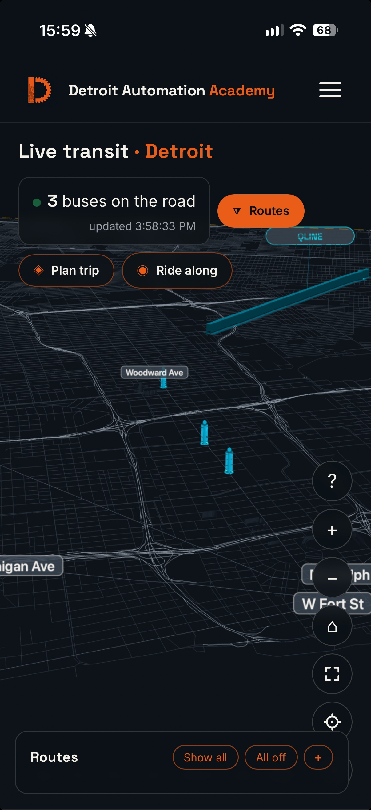
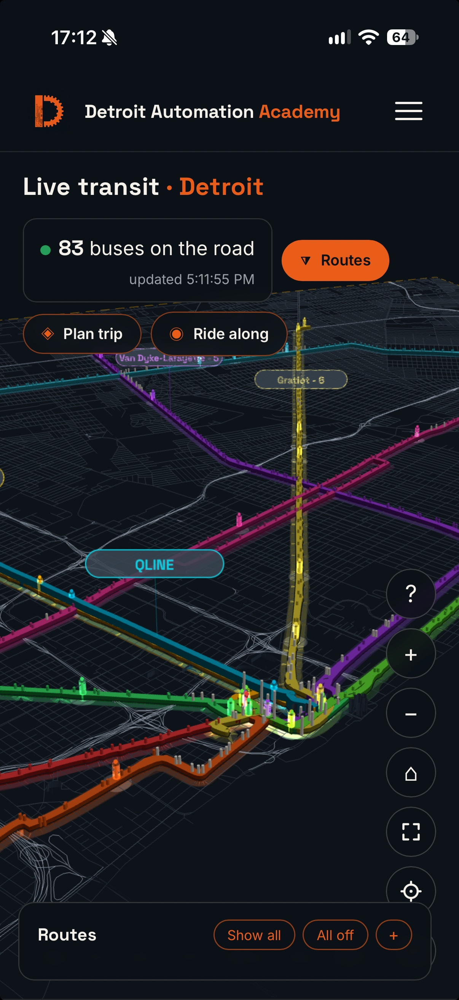

Live Transit Detroit · Installment 06 · October 2026
The QLINE Sign Error
Published October 13, 2026 · By Justin Spencer Smith
On October 12, the QLINE track on the Live Transit map was redrawn from the TIGER/Line 2025 Woodward Avenue centerline, replacing hand-drawn geometry that sat off the road. On October 13, a screenshot from the production page showed the replacement was also wrong: with QLINE enabled, the track rendered as a thick teal bar floating diagonally across the street grid, while the three QLINE vehicle markers sat in their correct positions near Woodward Avenue, south of the bar. This document records the cause of the error, the evidence that isolated it, and the resolution. The fault was one missing minus sign, applied 64 times.

The format convention
Route geometry for the map is stored in per-agency data files (ddot-routes-3d.json, smart-routes-3d.json, qline-3d.json) that share one shape: a projection block, route groups, and routes whose paths are lists of coordinate pairs. The pairs are not latitude and longitude. They are scene coordinates produced by the renderer's projection, project(lat, lon) = [(lon − lon0) · mLon, −(lat − lat0) · mLat], with mLat = 111320 and the origin at lat0 = 42.381161. The renderer consumes the pairs verbatim as scene (x, z). The operative consequence is the second coordinate: z = −(lat − lat0) · 111320. Every point in Detroit is south of the origin parallel, so every valid z in these files is positive — downtown points in the DDOT and SMART files carry z of roughly +5,400 to +5,700. A file that stores z without the negation does not store an approximation of the track. It stores the track's mirror image.
Cause of error
The October 12 extraction converted the TIGER/Line centerline into the file format and wrote the second coordinate as z = (lat − lat0) · 111320 — projected Y, positive northward — without negating it into scene Z. All 64 points in qline-3d.json (two paths of 32 points; the second path is the first in reverse) therefore carried negative z. The renderer, applying the pairs verbatim, drew the track mirrored across the parallel through the origin: up to approximately 11.5 km too far north, with its north–south slope inverted, which is what produced a diagonal bar crossing the grid instead of a line following the avenue. The x coordinates (longitude) were correct throughout, which is why the bar still crossed Woodward Avenue's longitude band and passed near the corridor at one end. The TIGER/Line centerline geometry itself was sound. Only the conversion into the file format was wrong.
Why the earlier fix did not fix it
The October 12 change replaced the geometry and reused the same conversion that had produced the hand-drawn file's coordinates. Replacing the input data cannot correct an error in the transformation applied to it. The change was also never verified in a browser on the production page; served-byte checks confirmed that the new file was live, and the file was live — it was the content that was wrong. Both failure modes are recorded in the production rules below.
Evidence
The diagnosis was reproduced numerically before any change was made, using the renderer's own projection math against the file actually served from production. Unprojecting the served path returned latitudes 42.393–42.433 — north of Grand Boulevard, where Woodward Avenue does not run. Three alternative explanations were tested and eliminated: the served file was byte-identical to the repository file, so the defect was not staleness or caching; the deploy workflow copies root *.json, so the file was being served; and QLINE merges into the same data structure and the same ribbon builder as DDOT and SMART, so the renderer was not treating it differently — the two sibling files render correctly on the same code path.
| Check | As served | After the fix |
|---|---|---|
| Campus Martius to path | 7,183 m | 37.2 m |
| Grand Circus Park to path | 6,587 m | 12.3 m |
| Fox Theatre to path | 6,297 m | 4.3 m |
| Grand Blvd & Woodward to path | 2,761 m | 7.8 m |
| Live vehicle 287 to path | 4,780 m | 10.0 m |
| Live vehicle 292 to path | 4,592 m | 6.5 m |
| Path vs. DDOT route 4 (Woodward, GTFS-derived) | mean 3,339 m | mean 7.1 m, max 62.2 m |
Distances are point-to-segment, measured in Node with the production projection. The Congress Street reference measures 141.5 m after the fix; that reference is the centre of the Congress/Woodward intersection, and the track's southern terminus sits on Woodward between Congress and Larned, so a residual offset at that one reference is expected rather than anomalous.
Resolution
The fix was applied at the data layer only: the second coordinate of all 64 points in qline-3d.json was negated. The renderer was not changed — it and both sibling files agree on the convention, and changing the renderer to match one incorrect file would have broken every correct one. No geometry was rebuilt; the TIGER/Line points were already correct once the sign convention was honoured. The byte-level diff against the previous file is exactly the 64 removed minus signs (1,637 → 1,573 bytes); the projection block, groups, stops, and metadata are untouched, and no JavaScript changed, so no cache stamp moved. The change shipped as commit 59c99261cb to the production repository on GitHub Pages; the deployment for that commit reported success, and the file served at the production URL is byte-identical to the fixed file.

Verification
After the fix, the path unprojects to latitudes 42.329–42.369, monotonic from the Congress Street end to Grand Boulevard, with endpoints at (42.32937, −83.04530) and (42.36912, −83.07257) — Woodward Avenue at both termini. Two of the three live QLINE vehicles measured 10.0 m and 6.5 m from the corrected path. The third sat approximately 330 m beyond the northern endpoint, consistent with terminus turnback and layover trackage at Grand Boulevard, which the extracted revenue alignment does not include; it does not affect the drawn route. Visual confirmation was completed on device against the production page: the line lies on Woodward Avenue for its full length, the QLINE label anchors over the corridor, and the DDOT and SMART lines are unchanged.
Rules recorded
Two standing rules come out of this defect. First, before replacing any data file, read the existing file's byte structure and the consumer's parsing code — and where sibling files follow a convention, verify the new file against a sibling that renders correctly; a sign convention is exactly the class of detail that "same JSON shape" does not capture. Second, a geometry change is not done when it is pushed or when the served bytes match. It is done when the rendered result has been seen on the production page. The October 12 change satisfied the first two checks and was still wrong in the only way that mattered.